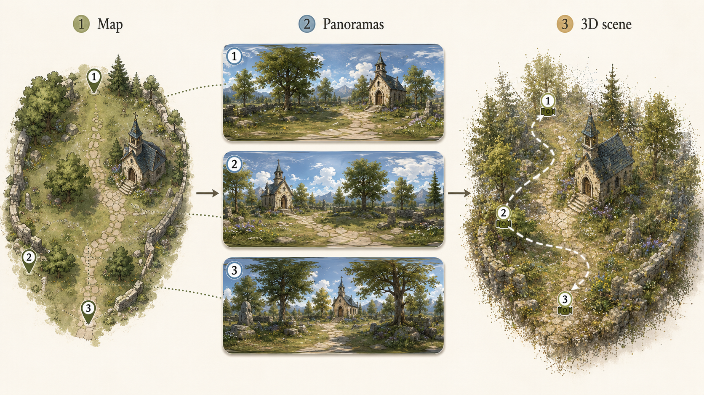

Treating the world model as the primary artifact, not as a component inside an RL agent or a video generator. The point of the system is the experience of being there.
A world model here is a generative system that produces a navigable, interactive environment. Most current research uses world models as components — inside RL agents, behind video generators. This project treats the world model as the artifact: someone walks through a generated world and explores it. Two domains are in scope. Historical events and places — Otrar in 1218 before the Mongol siege, Constantinople in 1453, a Heian-period Kyoto street. Imagined or fictional worlds — a medieval-fantasy trade town in the spirit of Spice and Wolf, a Strugatsky-style Zone, an original world. Both share a deeper structure: an explorable environment that doesn't exist as a place a person can physically visit, where the value is in being there.

Four distinct things happen for someone inside a generated world. They aren't the same and shouldn't be conflated. For historical worlds, all four matter; for imagined worlds, the atmospheric and emotional ones dominate, since "accuracy" doesn't apply.
What was the layout. How did the rooms connect. Where did the walls breach. Why was the city positioned this way. Hard to get from text or photos.
mechanism · presence in spaceWhat was the scale of this building. What did the light look like in this kind of room. How dense were the crowds in this kind of market. Calibrations of the imagination, not facts.
mechanism · direct perceptionWhat if I went left instead of right. What if I asked this person something. What if I time-shifted to dawn or to two weeks later. Requires interactivity and consequence, not just visual fidelity.
mechanism · choice and feedbackThis is real. My ancestors lived here. This place mattered. Not learning in the academic sense — relationship-formation with a place. Triggered by everything else working together.
mechanism · affectThree live browser demos already exist, all built from a single 360° panorama (the depth-only "Path A" baseline). They make the splat-vs-mesh distinction visceral, and the explainer page covers the math behind 3DGS. Click in.
What a Gaussian is, splatting math, training loop, three live canvas widgets (single 2D Gaussian sliders, isotropy comparison, training-step animation), and a 6-second rendered training video.
/3dgs-explainer/ demoThe same panorama rendered as ~390k 3D Gaussians, in WebGL via mkkellogg/gaussian-splats-3d. Drag to look, scroll to zoom, WASD to fly.
Same panorama turned into a 394k-vertex textured mesh. Three.js + PointerLock; WASD + mouse + jump + sprint, T-key cycles texture / wireframe overlay.
/3dgs-mesh/ workflowThe interactive-doc convention used across this project: select text in a self-contained HTML, get a "+ Comment" pill, copy the JSON back to Claude Code for batch edits.
/annotation-workflow/Source: github.com/vladimiralbrekhtccr/world-models
A hybrid of three representations, each chosen for what it's actually good at:
Terrain, building exteriors, atmosphere, lighting. Fast to render, photoreal where source data supports it, forgiving where it doesn't. The right primitive for everything the eye sweeps over.
Animatable characters, key buildings with crisp architectural lines, interactive props, anything the user might collide with. Decades of pipeline tooling Gaussians don't yet match.
Two roles: detail synthesis at the periphery where ground-truth assets don't exist; and stylistic refinement of rendered frames to enforce consistency across the hybrid.
Designed for dynamic captures with multi-camera over time, which historical/imagined scenes don't have. Whether 4DGS adds value here, or whether dynamics should live in a separate layered system, is itself an open research question.
Current substrate. The diagram above (map → 3 panoramas → multi-view 3DGS) is the substrate we're building first. It works for both domains: a fictional fantasy clearing and a reconstruction of Otrar 1218 use the same code path — only the references and the artistic register change.
A project like this can sprawl forever. Anchoring on one or two specific technical questions keeps it converging. Each is independently interesting.
Where does 3DGS hand off to diffusion in the rendering pipeline, and what does the seam look like visually. Most published work uses one or the other, not both in a tight loop.
Pre-photographic eras have engravings, paintings, written descriptions, partial archaeological reconstructions. How do you actually build a 3DGS asset from these. The hardest question and the one with the least public work.
Does 4DGS make sense for static-scenes-with-imagined-events, or is a separate dynamic layer cleaner. Need to build it both ways and compare.
Photoreal reconstruction of a pre-photographic scene lands in uncanny territory because the data doesn't support photorealism. Stylized (painterly, illustrative, ukiyo-e-like) might be more honest. Comparing registers is its own exploration.
What does it feel like to walk through a 3DGS scene as opposed to a meshed game environment. Where does the illusion break. The walkable-mesh demo above is the first data point.
How small and fast can a meaningful scene run in a browser, with WebGL or WebGPU. The current demos answer "1 panorama → 20-100 MB and 60 FPS"; the next question is how that scales to a multi-room reconstruction.
Targets, not deliverables. Each one drives different technical sub-questions; picking one is the next decision. The right choice is the one that most directly attacks whichever research question gets prioritized.
These are the decision points. Joining the project effectively means having an opinion on at least the first two.
If this is interesting to you: the cheapest first step is to actually walk through one of the live demos above. Drop a comment on whatever stands out. The 3DGS explainer's page has inline annotations — your notes stay in your browser, and copying them back to me is one click.
To talk about it: open an issue or message me through the world-models repo. The MultiPano/README.md is the closest thing to a current technical roadmap.
What I'm not looking for: a co-founder. This is a research exploration, not a startup. I'm looking for people interested in the questions for their own sake, who want to think alongside.
This page is a working note. It will be updated when major design decisions are made — scene choice, primary research question, aesthetic register, delivery target.